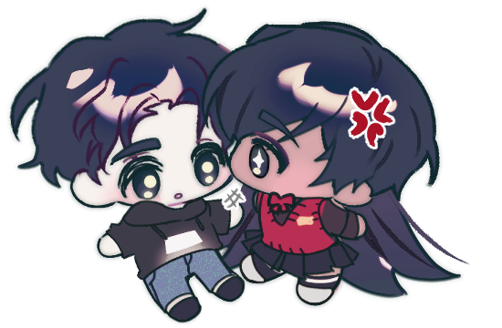

To the most handsome, wonderful, generous, hardworking, lovable, understanding, hilarious, resilient, compassionate, and pure-hearted human:
I am so grateful that I have been able to spend the past 5 years celebrating today with you. Thank you for all the memories that you have gifted me and all of the silly debriefs we've shared.
This year, I am lucky enough to be there with you today. I was so, so blessed to be able to hold you you this morning and give you this gift in person. I am incredibly fortunate to be able to cuddle you to bed most nights and wake you up with my alarms most mornings. I want you to know, even if we still had several hundreds of miles between us, my love for you would not waver. It is a luxury, of course, to have you be the starts and ends of my days, but I do not want you to doubt that you would still be the part of my day I look forward to most, had I been in anywhere else in the world.
Erek, you are my first and my last love. I need no one else's love so long as I have you in my life. At the time, I felt that I would have been content with a friendship with you so long as you stayed in my life. Miraculously, our lives have placed us right beside one another as partners. In retrospect, I do not think that I could have just remained friends with you. With every conversation and every laugh, I have found myself falling deeper and deeper in love with you. It is simply unfair how hard it is to keep myself from adoring you.